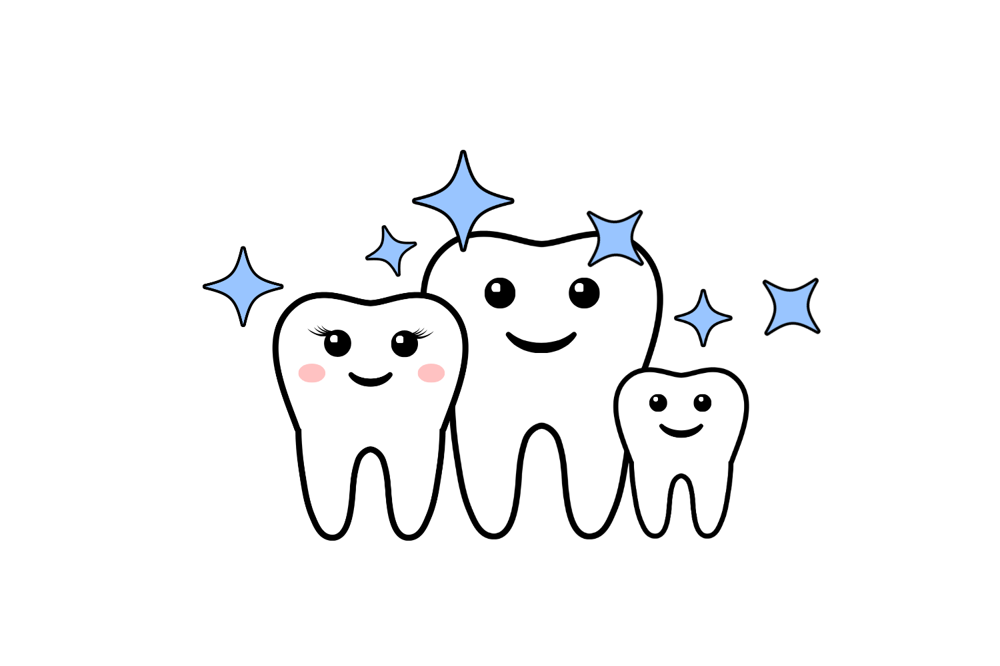

Services Offered
At Terra Vista Dental Care we provide dental care for the entire family. Our experienced doctor and friendly staff will make sure you and your children receive the best dental treatment and care in a very welcoming and happy environment.
We emphasize regular dental check-ups. We do an oral cancer screening and thorough checkup of your teeth, gums and oral mucosa so we can detect problems at an early stage preventing costly dental problems in the future. Click here for our New Patient Exam/Cleaning special offer.

Regular 3-monthly or 6-monthly dental cleanings help keep your teeth healthy and cavity-free. It also keeps your gums healthy and potentially prevent the next stage in gum disease known as periodontitis.

We give oral hygiene instructions at every cleaning. We will demonstrate to you how to brush and floss properly so you can keep your teeth healthy and clean between dental check-ups.
Regular applications of Fluoride Varnish on teeth, typically after every dental cleaning helps strengthen enamel and prevent cavities. It can also reverse incipient cavities (cavities in very early stages) by a process called remineralization. It is a yellowish liquid that leaves no residue or discoloration.
Dental Sealants are placed on virgin teeth (teeth with no previous cavities or fillings) to seal natural deep fissures on teeth. This is a painfree procedure requiring no numbing. It is a commonly used preventive procedure to prevent cavities in children and can be used for adults as well.
Laser technology is used in dentistry as an option to traditional dental approaches because of its high precision and enhanced comfort to the patient. It can be used for gum recontouring, as a sterilizing agent and for enhanced tissure healing in cojunction with deep cleaning.
Dental bonding is a quick non-invasive cosmetic procedure where a tooth-colored composite material is used to fix chipped or cracked teeth. It is also used to treat discolored or mal-formed teeth or even close small gaps between teeth.
Veneersveneers
Invisalign or any other clear aligner treatment provides a great alternative to traditional metal braces. To schedule a free consultation to see if you are a good candidate for clear aligner treatment call us at (909) 256-8484.
If you ever had orthodontic treatment, using retainers helps prevent unwanted teeth movement and relapse. This could save you from costly retreatments in the future. We offer different kinds of orthodontic retainers including fixed retainers, clear retainers and retainers with wire clasps.
We provide professional ZOOM teeth whitening services. We do in-office whitening as well as make custom bleaching trays for you to take home. Doing the procedure in the office allows us to protect your gums while evenly bleaching your teeth. Zoom has shown to whiten teeth upto eight shades ligher in a single session.
We do tooth-colored white fillings also known as composite restorations to treat cavities. We also do silver fillings (amalgam restorations.)

If your cavity is big the doctor might suggest a dental inlay instead of a composite filling. Simply put, an inlay is a custom filling made out of high quality porcleain in a dental lab. An inlay sits passively in the tooth and provides excellent fit, durability and esthetics.
Dental crowns are used to protect and hold together broken teeth, badly decayed teeth or teeth with cracks. There are different types of crowns including ceramic (tooth colored), metal and porcelain with metal.
Dental onlays are like partial crowns. Onlays are used to protect broken teeth when a full coverage crown is not needed. This allows the dentist to cover only part of the tooth that needs to be protected and leave the rest of the tooth intact. They are made from tooth colored porcelain, have a precise fit and offer excellent esthetics.
If you need a deep cleaning also know as scaling and root planing our doctor will work hard to make sure all the build-up is removed so that your gums can start returning to their normal health.
Arrestin is a special type of antibiotic that is delivered to the bottom of the infected gum pocket after a deep cleaning (It does not require any needles or anesthesia.) It is recommended when you have severe gum disease known as periodontitis. Arrestin helps reduce pocket depth, bleeding and harmful bacteria.
Play a sport? Martial arts, football, soccer, boxing? Get a sports guard and protect your teeth. Custom sportguards fit your teeth so perfectly you feel like wearing it!
Bruxism is a technical term for when you grind your teeth. Most people who grind their teeth do it at night (Ask your spouse if they hear you grind your teeth.) Bruxing creates cracks and small fractures on your teeth that could lead to bigger dental problems. Wearing a night guard while you sleep protects your teeth and surrounding structures.
We do dental extractions and bone graft procedure after the extraction to maintain structural integrity and prevent the jawbone from shrinking.
If you have a missing tooth or teeth a dental bridge to replace the missing tooth and fill that gap between your teeth. The bridge is permanently cemented in place.
Never leave home without your smile! We make full, partial, immediate full, immediate partial, metal-based, resin-based and flexible base based dentures, plates etc.
For more information on common dental procedures, click here.